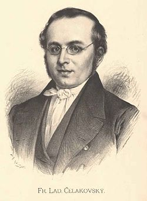
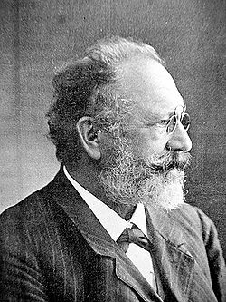
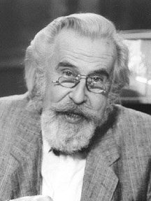
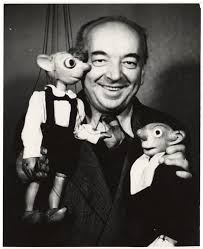
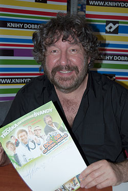
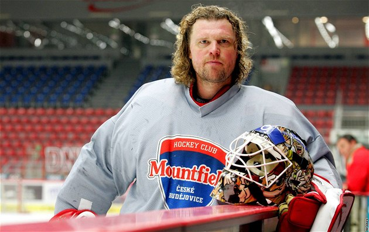
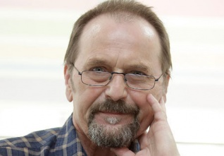

narozen 7. 3. 1799 StrakoniceBásník období národního obrození, kritik a překladatel. Po ukončení německé školy pokračoval na piaristickém gymnáziu v Českých Budějovicích, dostudoval na píseckém gymnáziu. Jeho tvorbu ovlivnil přítel Jan Vlastislav Plánek. Město a okolí si velice oblíbil a rád vzpomínal i v dospělosti na Kuřidlo, Panskou zahradu i na otavské břehy.

narozen 13. 2. 1848 hornorakouský HaagProzaik, představitel realistického venkovského románu, profesor němčiny a francouzštiny. V literárních začátcích psal německy, většinu díla ale vytvořil v češtině, psal črty a fejetony. Zachytil svérázné typy obyvatel Šumavy, jejich zvyky a tradice, přírodu. Z jeho díla jsou nejznámější romány Ze světa lesních samot, V ráji šumavském a Mlhy na Blatech. Jeho povídky jsou soustředěny v souborech V srdci šumavských hvozdů a Pošumavské rapsodie.

narozen 18. 2. 1923 MaleniceTelevizní a filmový režisér. Vystudoval reálné gymnázium ve Strakonicích, v letech 1945-1949 studoval sociologii, psychologii a divadelní vědy na Univerzitě Karlově, současně byl v letech 1947-1950 posluchačem FAMU. V lednu 1951 přešel na Vysokou filmovou školu v Moskvě. U diváků a kritiky prorazil komedií Kam čert nemůže s Janou Hlaváčovou v hlavní roli.

narozen 16. 1. 1892 StrakoniceČeský loutkoherec, režisér a scénograf, akademický malíř, profesor gymnázia, významná postava českého a světového loutkového divadla, tvůrce loutek Spejbla a Hurvínka. Od roku 1917 spolupracoval s Loutkářským divadlem v Plzni, kde se projevilo i jeho herecké nadání a autorské a režisérské schopnosti. V roce 1930 založil v Plzni vlastní profesionální loutkovou scénu. V roce 1945 založil pražské Divadlo Spejbla a Hurvínka s repertoárem určeným dětem i dospělým.

narozen 18. 5. 1953 StrakoniceScénárista a režisér. Dětství a mládí prožil v Hošticích u Volyně, které proslavil svou filmovou trilogií Slunce, seno… Mezi jeho nejznámější díla patří Bota jménem Melichar, O princezně Jasněnce a létajícím ševci, Princezna ze mlejna, Z pekla štěstí, Kameňák či Babovřesky… Jako pomyslný král působil několik let v turistickém projektu Jihočeského pohádkového království.

narozen 21. 5. 1970 StrakoniceHokejista, brankář. Hokej začal hrát v sedmi letech za ČZ Strakonice. Od roku 1996 hrál v zámořské kanadsko-americké hokejové lize. Mnohokrát reprezentoval ČR, je mistrem světa (Vídeň 1996), nejlepším brankářem na MS 1996, dostal se do All Stars týmu MS (1995, 1996). Svůj odchod z NHL ohlásil v roce 2005 a stal se kmenovým hráčem HC České Budějovice.

narozen 6. 11. 1945 ChomutovLyrický a satirický básník, tvůrce osobité poezie pro děti i dospělé. Ve Strakonicích žil v letech 1950-1969. Vystudoval stavební fakultu ČVUT a Fakultu žurnalistiky UK. Po tříleté inženýrské praxi se začal věnovat literatuře. Působil jako redaktor nakladatelství Čs. spisovatel a časopisu Vlasta, od roku 1994 je na volné noze. Vydal asi 50 knih básní a překladů poezie, epigramů, aforismů, bajek, fejetonů a povídek. Je rovněž autorem úspěšného slabikáře a encyklopedie pro děti.